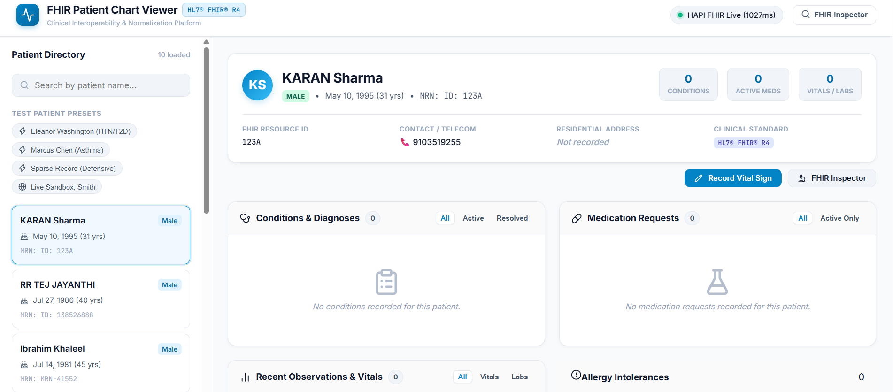

HealthTech • HL7 FHIR
HealthTech Interoperability
FHIR Patient Chart Viewer
Production-ready HL7 FHIR R4 interoperability application rendering real-time clinical observations with a Node/Express proxy, defensive normalization, and a responsive React clinician dashboard.
React.js
HL7 FHIR R4
TailwindCSS
Node.js
Express